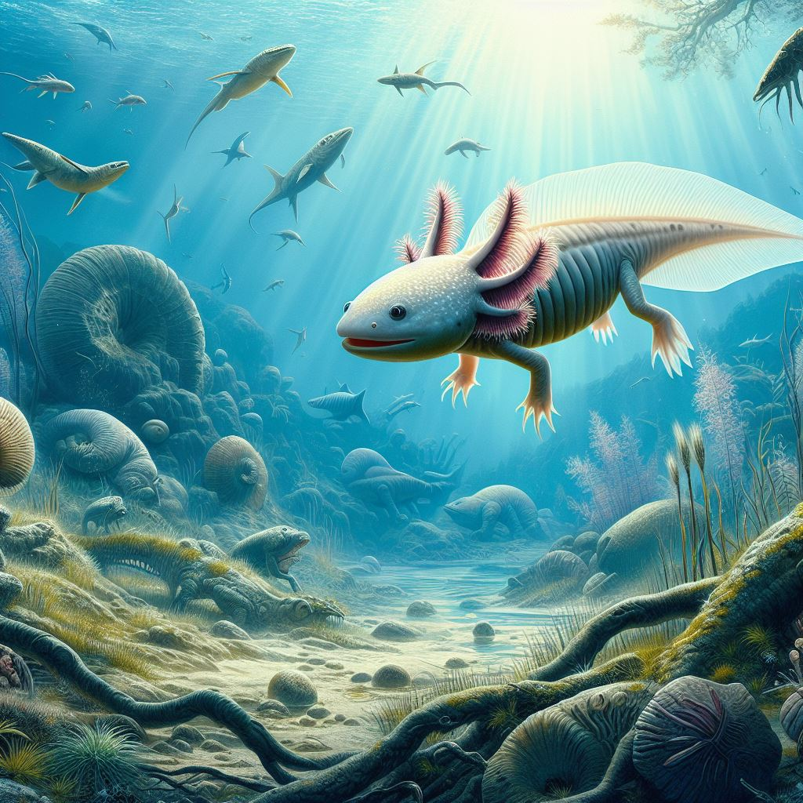

Heute im Rampenlicht: Der moderne Axolotl
Unser Zoo ist Heimat eines einzigartigen Wunders der Natur - dem Axolotl. Dieses bemerkenswerte Lebewesen fasziniert Besucher jeden Alters mit seiner erstaunlichen Regenerationsfähigkeit und seinem einzigartigen Aussehen. Als Bewohner der Gewässer von Xochimilco in Mexiko ist der Axolotl ein Symbol für die biologische Vielfalt und ein Meister der Anpassungsfähigkeit.
Ein Blick in die Vergangenheit: Der urzeitliche Axolotl
Tauchen Sie ein in die Welt der prähistorischen Wunder mit unserem urzeitlichen Axolotl. Dieses erstaunliche Geschöpf ist ein lebendes Zeugnis der Evolution und verbindet uns mit einer vergangenen Ära. Seine Existenz seit Millionen von Jahren lässt uns eintauchen in die Geheimnisse der Naturgeschichte und eröffnet neue Perspektiven auf die Evolution des Lebens auf unserem Planeten.
Mehr über Axolotl
Axolotl sind Amphibien, die zur Familie der Querzahnmolche gehören. Sie sind in Mexiko heimisch und bewohnen hauptsächlich die Gewässer um Mexiko-Stadt, insbesondere den Xochimilco-See und den Chalco-See. Axolotl sind faszinierende Kreaturen, die für ihre Fähigkeit bekannt sind, Regenerationskräfte zu besitzen. Sie können verlorene Gliedmaßen, Organe und sogar Teile ihres Gehirns nachwachsen lassen. Diese einzigartige Fähigkeit hat die Aufmerksamkeit von Wissenschaftlern auf sich gezogen, die hoffen, von den Regenerationsmechanismen der Axolotl zu lernen und sie auf die Medizin anzuwenden. Obwohl Axolotl in der Wildnis stark gefährdet sind, werden sie in Gefangenschaft gezüchtet und sind bei Aquarianern aufgrund ihres ungewöhnlichen Aussehens und ihrer faszinierenden Eigenschaften beliebt.